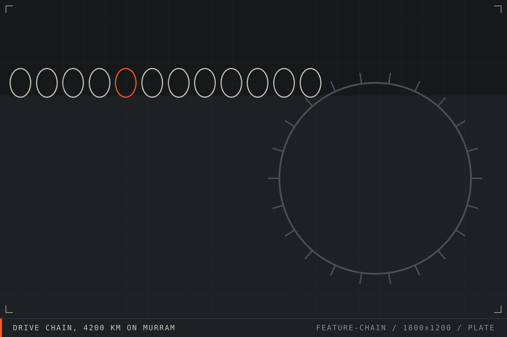

Field 013
Maintenance guide Frontier Workshop bench 04 AUG 2026
Chain service intervals when the road is dust
The service book assumes clean air. Here is the interval that actually keeps a chain alive on murram.
A drive chain on dusty roads does not fail from lack of lubricant. It fails from lubricant that has turned into grinding paste. The fix is not more oil, it is a different schedule.
- Applies to
- Chain drive, all sizes
- Clean interval
- 300 to 500 km on murram
- Lube interval
- After every clean
- Slack check
- Weekly, or after load changes
- Wear limit
- 2 percent stretch
- Tools
- Brush, paraffin, rule
Read the story